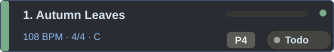
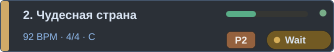
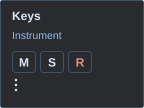

46 оригинальных векторных ассетов по референсу MR Live. Reference показывает статические данные; template и icon предназначены для динамической реализации JUCE. Без PNG и внешних зависимостей.



Каталог: manager-v1.json · цвета: manager.json. Файлы автономные SVG; сам каталог не загружает их в JUCE.